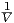
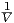

| Z
tot. = eiϕ, | (109)
= ,ϕ = arctan,
 where Z
where Z
eff. = Z˙C + Z˙LandR˙eff.aretheeffectivecompleximpedancesandeffectiveresistances,respectively.
So, to do this problem, you must find the output voltage by using Ohm’s law, V = IZ (for complex
impedance Z), and look at the behavior of the circuit as ω →∞. You can solve for I with
I = V
in./Z,whichistosaydividingtheinputvoltagebywhateverimpedanceitencounters.Thisisalsohelpfulbecauseitwillgiveanoutputvoltageintermsoftheinputvoltage,andcomparingthosetwoisexactlywhatweneedtodotodetermineifsomethingisahigh-
orlow - passfilter.Goingthrougheachcircuit,wehave :
In this case, Z = R + iωL. Therefore, I = V
in./, and so the output voltage is this current multiplied by the resistor at the
end,
Vout. = R Vin.____
R + iωL. (110)
Now, look at the behavior at high frequency. As ω → ∞, Vout. → 0. Therefore, at high
frequency, the output turns off. This is therefore not a high-pass filter.
Here, Z = R+iωL as before, but now the current must pass by the inductor instead of the
resistor. Therefore, the input voltage is multiplied by the inductor’s complex impedance
instead,
Vout. = iωL Vin.____
R + iωL. (111)
Whether or not this converges provides an opportunity to review L’Hˆopital’s rule. If the
limits of the numerator and the denominator exist, and they both converge to either 0 or
∞, then L’Hˆopital’s rule applies, which says that not only does the limit of the fraction
exist, but that it is equal to the limit of the derivative of the numerator divided by the
derivative of the denominator. In math,
lim
x→c f(x)____
g(x) = lim
x→c f′(x)
g′(x), (112)
provided that lim
x→c f(x), lim
x→c g(x) = 0 or ∞. (113)
Here, we can quickly check that this condition is satisfied, and so we need only take the
derivative of the numerator and the denominator with respect to ω and examine the limit
of that.
lim
ω→∞ Vin.iL_____
iL = Vin.. (114)
So we have Vout. ≈ Vin. and this is a high-pass filter.
Here, Z = R + 1∕iωC. The circuit is analogous to the first one in setting up the equation
for the output voltage: you just swap out iωL for 1∕iωC. So,
Vout. = R Vin._______
R + 1∕iωC. (115)
In the limit as ω gets large, then, the denominator approaches R. This cancels with the R in
the numerator, leaving an output voltage equal to the input. Therefore, this is a high-pass
filter.
As before, Z = R+1∕iωC, but the final circuit element is the capacitor. So the the output
voltage will be
Vout. = (1∕iωC) Vin. _______
R + 1∕iωC, (116)
which goes to 0 as ω →∞. This is a low-pass filter.
Answer: (D).
40 An
RL
circuit
As soon as the switch is closed, the battery is going to be pumping the inductor full of current,
eventually leaving it impenetrable. Right away, this removes all the possible solutions which are
not decaying, leaving only (D) and (E). Then you must have memorized the time
constant, τ. You can derive τ by examining the response of the differential equation
governing the system to a step function (provided here by flipping the switch). The time
constant represents the amount of time for the system to decay if it continued at the
original rate. In the case of the RL circuit, the differential equation is V = QL + ˙ QR,
and the time constant is τ = L∕R. For an RC circuit, by the way, V = -RC ˙V , with
τ = RC.
Finally, we have τ = L∕R, and L = 10 mH, and R = 2Ω. So,
τ = 10 × 10-3 H∕2Ω = 5 × 10-3 s = 5 ms. (117)
Answer: (D).
41 Magnetic
charge
in
Maxwell
The logic for this question is largely similar to a question about magnetic monopoles. You make
analogous equations for B that you already have for E, and Maxwell’s equations become
symmetrical for B and E.
I. Presumably, if magnetic charge exists, then it only sources magnetic fields when
it’s not moving, and would leave the electric field sourced by electric charge
untouched. This equation describes the electric field due to electric charge.
II. For the same reason as above, we would expect the magnetic charge to source
a diverging field, if it behaves like electric charge.
III. We know that moving electric charge, electric current, does induce a curling
magnetic field. Therefore, by analogy, moving magnetic current would induce
a curling electric field.
IV. The equation for the curl of the electric field now contains only contributions
from the magnetic field and the magnetic current (if we follow the prescription
we just established above). Therefore, by analogy, the equation for the curl of
the magnetic field should contain only contributions from the electric field and
current, as it already does.
Answer: (E).
42 Current
through
loops
It is handy here to recall the rule of thumb that systems will induce current in such a way that
the resulting magnetic field “fights” the change in magnetic flux. (Some texts say “nature abhors
a change in flux”, but I’ve always personally found that statement difficult to understand.) In the
system provided, the center ring is moving towards A and away from B. Taking one ring at a
time:
∙ B: The center ring is moving away from ring B, so the flux is decreasing. In
order to try and maintain the magnetic field B was experiencing, it will want
a field pointing the same direction as the center ring, and so it will induce a
current moving in the same direction, counterclockwise.
∙ A: The center ring is moving towards ring A, so its flux in increasing. Therefore,
A will want a field pointing in the opposite direction of the center ring’s, so its
current will be the opposite direction, clockwise
Answer: (C).
43 Angular
momentum
commutation
relations
For this problem, one can either recall the identity for combining commutators, or do the
brute-force method and derive the general rule. I’ll do the latter.
The given commutations, written out, are
[Lx,Ly] = LxLy - LyLx = iℏLz, (118)
[Ly,Lz] = LyLz - LzLy = iℏLx,and (119)
[Lz,Lx] = LzLx - LxLz = iℏLy. (120)
So when we write out the desired commutation relation, it is clear that certain bits can be
replaced by the relations above:
[LxLy,Lz] = LxLyLz - LzLxLy, (121)
= Lx (iℏLx + LzLy) - (iℏLy + LxLz)Ly, (122)
= iℏ (
L2
x - L2
y)
. (123)
In the lines above, I have inadvertently derived the identity which you might memorize,
[AB,C] = [A,B]C + B[A,C]. (124)
Answer: (D).
44 Energy
of
a
particle
in
a
box
This problem has a lot of red herrings. The only thing you need to know are the energies of the
energy eigenstates. The measurement of the energy of a particle with a ensemble wave function
will only give you the energy of one of the constituent wave functions.
Therefore, the only equation we need to concern ourselves with is
En = n2π2ℏ2
2mL2 = n2E
1. (125)
So, we’re looking for answers which are both square multiples of E1 and appear in the ensemble
wave function. Incidentally, there’s only one answer which is even a square, so we go with that
one, but what if there were two which were perfect squares, say 9E1 and 25E1? We would still go
with 9E1 because we see that the wave function has an eigenstate in the state n = √
_9 = 3 but
not in n = √
_25 = 5.
Answer: (D).
45 Harmonic
oscillator
eigenstates
This problem is largely similar to problem 29. We’re given the eigenvalues of an operator and
asked to find the expectation value of some ensemble state. The prescription is exactly the same:
Apply the operator to each constituent eigenfunction, and take the inner product of the ensemble
state to determine the expectation value.
The operator of interest is
H |n⟩ = ℏω (
n + 1
2)
|n⟩, (126)
which we will apply to the wave function
|ψ⟩ = 1 __√
_14 |1⟩- 2 __√
_14 |2⟩ + 3 __√
_14 |3⟩, (127)
= 1 __√
_14 (|1⟩- 2|2⟩ + 3|3⟩) (128)
Then we will take the inner product ⟨ψ|H |ψ⟩ to find the expectation value. Applying the
operator goes like this:
H |ψ⟩ = 1 __√
_14 (H |1⟩- 2H |2⟩ + 3H |3⟩), (129)
= 1 __√
_14 (
ℏω (
1 + 1
2)
|1⟩- 2ℏω (
2 + 1
2)
|2⟩ + 3ℏω (
3 + 1
2)
|3⟩)
, (130)
= ℏω _√
_14 (
3
2 |1⟩- 25
2 |2⟩ + 37
2 |3⟩)
. (131)
Then, to take the inner product of H |ψ⟩ with ⟨ψ|, multiply the coefficients of matching
eigenfunctions (remember, the inner product is ultimately a dot product):
⟨ψ|H |ψ⟩ = 1 __√
_14 × ℏω _√
_14 (
1 × 3
2 + 2 × 25
2 + 3 × 37
2)
, (132)
= 43
14ℏω. (133)
Answer: (B).
46 Dependence
of
the
de
Broglie
wavelength
on
a
potential
This problem is asking us to manipulate two equations which depend on momentum (de Broglie
wavelength and classical kinetic energy) and asks us to find the wavelength when the energy
changes. The actual calculations are relatively straightforward; I think most of the trick to this
problem is in remembering the de Broglie wavelength and that classically, kinetic energy is
related to momentum.
So, before the particle enters the potential (while it’s still free), it has a wavelength and
energy
λ = h
p, and (134)
E = p2 _
2m, (135)
respectively. Afterward, the particle will have some wavelength, λ′, and energy, E′,
λ′ = h
p′, (136)
E′ = p2 _
2m - V = E - V. (137)
And, because we want an equation for λ′, I’ll combine the two equations above like
so:
λ′ = h _______∘
_______2m(E - V ) (138)
It is difficult at first glance to see what the best way is to relate the equations describing the
particle before and after entering the potential. I think it is easiest is to see that Plank’s constant
is going to be the same in both, and to write out Plank’s constant in terms of the relevant
quantities. (This is sort of using a “conservation of Plank’s constant”, but that’s also sort of
dumb1 1 h is a fundamental constant, so it’s not really conserved, it’s an invariant. Thanks to my colleague Mike
Sommer for pointing out this little piece of pedantry. .).
So, we can write Plank’s constant in terms of the particle’s energy and wavelength before it hits
the potential:
λ = h
p, (139)
p = √
___2mE, (140)
⇒ λ = h ___√
___2mE, (141)
⇒ h = λ√
___2mE. (142)
Then, we can plug this in for h in the equation for λ′:
λ′ = λ √
___2mE____∘
_______2m(E - V ), (143)
= λ∘
____ E
E - V , (144)
= λ(
E - V _
E )
-1∕2
, (145)
= λ(
1 - V _
E)
-1∕2
. (146)
Answer: (E).
47 The
change
in
entropy
of
an
expanding
container
I’m aware of two solutions to this which are both pretty quick; which one you should use depends
on whether you’re more comfortable with the equations of statistical mechanics or thermal
physics. I’ll go over both here.
Thermal
physics
solution
For this solution, you must know the second law of thermal dynamics (which you should
absolutely have memorized in general anyway),
ΔS = ∫ 1
T dQ. (147)
Then, the solution requires recognizing that the expansion of the container from V → 2V is
isothermal (“A sealed and thermally insulated container...”). That means that the total
heat change will be equal to the work done on the system, dQ = dW, and we already
know from problem 6 that W = ∫
PdV and, for an isotherm, W = nRT ln(Vf∕Vi).
Therefore,
dQ = PdV, (148)
⇒ ΔS = ∫ P
T dV = nRT ln(2V∕V ), (149)
= nRT ln(2). (150)
Statistical
mechanics
solution
In stat mech, the relevant definition of entropy is
ΔS = kB lnΩ, (151)
where Ω is the number of microstates of the system. Every additional particle will contribute one
microstate for every particle already in the system. That is to say, n particles will have 2n
microstates. Therefore,
ΔS = kB ln(2n), (152)
= kBnln(2). (153)
Then, we know that kB = R∕NA, where NA is Avogadro’s number. So,
ΔS = nR ln(2) (154)
Answer: (B).
48 Estimating
the
root-mean-square
velocity
of
a
gas
This problem is kind of scary, but there’s a nice approximation. If you remember that
root-mean-square is kind of an average, then you can treat the gasses classically, and compare the
velocities derived from their kinetic energies. Furthermore, because we know that the gasses are
kept at the same constant temperature, we know from the equipartition theorem that their
kinetic energies are both equal to 3∕2kBT. This means that their kinetic energies are equal,
so,
KEO2 = 1
2mO2v2
O2, (155)
KEN2 = 1
2mN2v2
N2, (156)
⇒ vO2
vN2 = ∘
___mO2
mN2 , (157)
= ∘
__32
28 = ∘
_8
7 (158)
Answer: (C).
49 Partition
function
and
degeneracy
I can think of no clever way to do this other than to have the Maxwell-Boltzmann partition
theorem memorized. This says,
Z = ∑
i gie-ϵi∕kBT , (159)
where g and ϵ are the degeneracy and energy of a given state, respectively. Now, we are told that
there are two states, each with a degeneracy of 2, and one has energy equal to ϵ while the other
has 2ϵ. So,
Z = 2eϵ∕kBT + 2e2ϵ∕kBT , (160)
= 2[
eϵ∕kBT + e2ϵ∕kBT ]
. (161)
Answer: (E).
50 Speed
of
sound
in
a
cold
flute
It is sufficient for this problem to know that the speed of sound goes as √
_T, so for temperatures
greater than 0, speed of sound in a gas goes linearly to first order, v ≈ c + kT, for some
gas-specific constants c and k. Therefore, for small changes in temperature, the change in sound
speed is proportional to the change in temperature. That means that if the temperature drops
3%, so does the sound speed. 3% of 440 is 3∕100 × 440 = 3 × 4.4 = 13.2, so the new speed of
sound is 440 - 13.2 = 426.8
Answer: (B).
51 Light
loss
through
polarizers
Every time light passes through a polarizing filter, the only thing that passes is the
component of the electric field (and associated magnetic field) which is parallel to the
polarization. This means that final filter will not block all the light, even though it is
perpendicular to the first filter: The light coming through the second filter has a component of
electric field pointing in the direction of the last polarizer, and so some of it will pass
through.
For an incident beam of light with intensity I0, the intensity, I, after passing through a filter of
angle θ will be I = I0 cosθ. Each filter is rotated 45∘, with respect to the one before it, so the
beam of light incident on each filter will be reduced by a factor of cos45∘ = 1∕2. As a polarizer
will cut in half the intensity of unpolarized light, the sequence of filters will render the final
intensity I0 → I0∕2 → I0∕4 → I0∕8.
Answer: (B).
52 Volume
of
a
primitive
unit
cell
A primitive unit cell is a cell for which every lattice point is connected by a vertex. While the
Simple Cubic (SC) lattice is its own primitive cell, the Body-Centered Cubic (BCC) and
Face-Centered Cubic (FCC) have lattice points hanging out in between vertices. A handy rule is
that the volume of a primitive cell is a3∕N where a is the side length of the conventional cell and
N is the number of unique lattice points required to define the primitive cell. SC lattices require
only 1 point to uniquely define the cell, so that confirms that it is its own primitive cell with
volume a3. BCC and FCC require 2 and 4 unique points, respectively, so they have volumes of
a3∕2 and a3∕4.
Answer: (C).
53 Temperature
dependence
of
a
semiconductor’s
resistivity
While I don’t know of any clever way to rigorously do this problem, and it ultimately needs you
to just know that ρ ∝ 1∕T, there is an argument to make the answer guessable. Semiconductors
rely on the constituent atoms having some electrons in the conduction band of the p-type
material available to make the jump to holes in the n-type. If the temperature is sufficiently low,
however, these atoms will hunker down in their potential wells and refuse to jump. Therefore,
you expect it to have very high resistivity at low temperatures, and, thankfully, there is only one
plot which looks like that.
Answer: (B).
54 Estimating
impulse
Even if you didn’t know that impulse, J, is the integral of force, the problem gives you a
well-defined and easy to calculate geometrical shape. It is my experience that such problems
usually want something having to do with the area of the geometrical shape. Here, the area is
given by
A = J = 1
2 × 2 × 2 = 2. (162)
Answer: (C).
55 Conservation
of
momentum
at
an
angle
When the smaller particle has come to a stop, it has deposited momentum mv into the
particle with mass 2m, which breaks up into m-sized particles. We know exactly how
much momentum these particles have in the x-direction: mv∕2. That they now have
a component of momentum in y means that their total speed must be greater than
v∕2.
Answer: (E).
56 Volume
of
gas
required
to
float
a
mass
When a body is in a fluid, the fluid will push on the body, causing a buoyant force. The buoyant
force can be calculated by integrating the pressure due to the surrounding fluid over the surface
area of the body. It works out to
f = ρfgVb ˆ r , (163)
for a body of volume Vb in a fluid with density ρf. g is the force due to gravity, and the force
points in the opposite direction that gravity is acting. Based on this equation, we can see that
the density of helium provided in the question is not useful. You need only the density of the
surrounding fluid, air.
So, this question is asking us to solve for the volume of helium, Vb, required for the buoyant force
to impart 10m∕s2 × 300 kg = 3000 N. Rearranging the equation above and plugging in, we
have
Vb = f __
ρfg, (164)
= 3000 ___
1.29 × 10, (165)
≈ 3000
13 ≈ 230. (166)
(167)
Answer: (D).
57 Force
due
to
a
jet
of
water
This is a perfect opportunity for unit analysis. The only solution with units of force is the first
one:
[
ρv2A] = [kg]
[m]3 [m]2
[s]2 [m]2 , (168)
= [kg][m]
[s]2 . (169)
Answer: (A).
58 Deflection
of
a
proton
in
electric
and
magnetic
fields
This problem is all about manipulating the equation for Lorentz force, which, for a particle of
charge q traveling with a velocity v, and interacting with electric and magnetic fields E and B,
reads
F = qE + qv × B. (170)
Then, there are two tricks which together make up the bulk of the solution.
For one, we know how fast the proton is going because it has been accelerated through a
potential V . The potential will accelerate the proton according to F = qE = -q∇V . Note that
this is not the same E as the electric field pointing in the x-direction as described in the problem.
This is merely the initial electric field used to get the proton up to speed; it is forgotten
thereafter.
Two, that the proton does not deflect from its trajectory means that it is not experiencing a net
force. That means that
F = qE + qv × B = 0, (171)
⇒ E = -v × B. (172)
So the force due to the electric field is equal and opposite to force due to the magnetic field when
the proton is traveling with velocity v.
Now, when the proton accelerates through a potential with double the magnitude of the original,
the new velocity, v′ will also be double:
F = -q∇V = mpa, (for proton mass mp), (173)
⇒ v = q _
mp ∫
∇V dt, (174)
V → 2V, (175)
⇒ v′ = 2q _
mp ∫
∇V dt = 2v. (176)
So now the total force will be
F = q (-v × B) + q (2v × B). (177)
The magnetic contribution is now greater than the electric contribution, so the proton will deflect
in the direction that the magnetic field wills it. By the right-hand rule, that is the
-x-direction.
Answer: (B).
59 LC
circuit-SHO
equivalence
The equation of motion for a simple harmonic oscillator is
md2x
dt2 + kx = 0, (178)
for a particle of mass m on a spring with spring constant k. Comparing with the equation given
for the LC circuit, we can draw analogies between the coefficients of like terms:
m → L, (179)
k → 1∕C. (180)
Finally, because Q is the quantity whose time-evolution you care about (it’s being differentiated),
it is playing the role of x.
Answer: (B).
60 Flux
of
a
sheet
through
a
sphere
Electric flux is defined
Φ = ∫
E ⋅ da, (181)
which is one of the first applications of Gauss’ law one sees in E&M. Because it’s integrating the
electric field over a surface area, it is equal to the charge enclosed in that surface divided by
ϵ0:
Φ = ∫
E ⋅ da = Qenc.
ϵ0 . (182)
So that’s what we want to find for this problem: The charge enclosed by the sphere. This means
finding the area of the circle of sheet which intersects the sphere.
I found the radius of this circle by drawing the radius of the sphere, R, to where the sheet meets
the edge of the sphere. This makes a right triangle, with sides R, x, and √
____R2 - x2. The area of
the circle with radius √
____R2 - x2 is π (
R2 - x2)
. Then, the total charge contained on this circle is
this area times the charge density. Divide this by ϵ0 to get the electric flux through the
sphere,
Φ = π (
R2 - x2)
σ
ϵ0 . (183)
This agrees with some limits, as well: When x = R, the sheet is outside of the sphere,
and so the total flux through the sphere should be 0. Furthermore, when x = 0, the
greatest amount of the sheet is contained in the sphere, and so the flux should be
maximized.
Answer: (D).
61 Electromagnetic
wave
hitting
conductor
This question requires you to memorize the boundary conditions for electromagnetic waves which
are changing media. I’ll spend this problem talking about what these boundary conditions mean
because they’re a point of personal confusion, then I’ll apply them to the problem of waves
hitting a conductor.
Boundary
conditions
in
E&M
The boundary conditions for electric and magnetic fields are
(i) E∥
1 = E∥
2, (ii) ϵ1E⊥
1 = ϵ2E⊥
2 + σf, (184)
(ii) B⊥
1 = B⊥
2 , and (iv) 1 _
μ1 B∥
1 = 1 _
μ2 B∥
2 + (Kf × ˆ n). (185)
These describe how the electromagnetic field in one medium (E1 and B1) is related to the
electromagnetic field in another (adjacent) medium (E2 and B2) right at the boundary between
the media. ϵ1 and ϵ2 are the permittivities of the two media, and μ1 and μ2 are the
permeabilities. σf is the free surface charge and Kf is the free surface current. Finally, ˆ n is a unit
vector pointing perpendicularly from the surface.
These equations describe how the components of E and B which are parallel (∥) and
perpendicular (⊥) change on either side of a boundary between media. What I consider the
important lesson from these boundary conditions is that the parallel components of E
are continuous, while the perpendicular components are discontinuous. The story
for the magnetic field is swapped. Knowing these boundary conditions goes a long
way to helping us solve problems of reflection and transmission of electromagnetic
waves.
Reflection
and
transmission
of
electromagnetic
waves
on
perfect
conductors
Applying the above to reflection and transmission necessarily makes the assumption that when
an electromagnetic wave comes in contact with a conductor, some of the wave will be transmitted
and some of the wave will be reflected.
Thinking only about the electric field for a moment, this means that the total field on the left
side will be composed of the incident field, EI and the reflected field, ER. The right side will only
be composed of the transmitted field, ET . In this case, there is no component of the
electric field perpendicular to the conductor: The wave is traveling perpendicular to the
conductor, so E and B must both necessarily be parallel (If it helps, recall the Poynting
vector, S = 1
μ (E × B), points in the direction of travel, so both the fields must be
perpendicular to the direction of travel. In this case, that means they’re parallel to the
conductor.).
So right away, we can apply two of the boundary conditions. Condition (i) implies
that
EI + ER = ET , (186)
and we know there is no perpendicular component, so σf = 0 by (ii). The question asks
about the total fields on the left side of the conductor, so it would be really great if
we knew something about ET . Unfortunately, I don’t know of a quick way to derive
ET 2 2 For the full thing, see p.396-7 of Griffiths, 3ed. ,
but when confronted with a problem like this, I think about how if you get inside a metal cage,
your phone won’t have a signal. That must mean that the transmitted electric field is 0.
Therefore, EI = -ER, and so the total field on the left side of the conductor is 0. Because of the
way the answers are provided, this is sufficient to give you the correct answer, but
I’ll provide an argument for why the magnetic field should be double the incident
field.
The reflected electric wave is traveling the exact opposite direction of the incident wave, and so
the Poynting vector of the reflected wave will read
SR = -SI = μ(-EI × BR), (187)
which, when you go through the right-hand rule, reveals that BR must be pointing in the same
direction as BI. Thus B will constructively interfere, and, as it’s in phase, it will double its
magnitude.
This is a long way of saying a general truth about waves incident on conductors: Conductors
kill the electric field and double the magnetic field.
Answer: (C).
62 Deriving
mass
from
cyclotron
frequency
“Cyclotron frequency” just means that a magnetic field is making a particle going in a circle.
Therefore, to find its mass, we can set the centrifugal force equal to the Lorentz force and solve
for mass:
mω2r = 2q
evB, (188)
⇒ m = 2qevB
ω2r , (189)
= 2qeωB
ω2 , (190)
= 2qeB
ω . (191)
Where above I have used the fact that ω = v∕r to cancel one of the ω’s in the denominator.
Then, before plugging in, make sure to notice that you need to convert the normal
frequency, given in Hertz, to an angular frequency. This is especially treacherous here,
as one of the incorrect answers is equal to what you would get if you forget to do
this.
ω = 2πν = 2π × 1600 Hz. (192)
Then we can plug in. In the interest of speed, notice that none of the answers have the
same coefficient being multiplied by some number of tens. This means we can drop all
orders of magnitude from the calculation, and only worry about finding the number in
front.
m = 2qeB
ω , (193)
(get the electron charge from the front of the test) (194)
= 2 × 16 × π _
2π × 16 × 4, (195)
= 1
4, (196)
= .25. (197)
And there is only answer which is .25 times some number of tens.
Answer: (A).
63 Deriving
temperature
from
wavelength
of
peak
blackbody
radiation
There are two equations about blackbody radiation which show up in GRE problems. One relates
power per unit area of the body to its temperature,
P = σT4, (198)
where σ is the Stefan-Boltzmann constant. The other relates the temperature of the body to the
wavelength of peak intensity, λmax,
λmax = b
T , (199)
where b is Wien’s displacement constant. That the problem gives us b as well as λmax suggests we
should use the second equation. Using the first would require not only knowing σ, but integrating
the intensity curve.
Plugging in,
T = b __
λmax , (200)
≈ 3 × 10-3 m K
2 × 10-6 m , (201)
= 1.5 × 103 K. (202)
Answer: (D).
64 The
many
uses
of
electromagnetic
radiation
Going through each option,
(A): When an atom emits E&M radiation, it is usually due to the actions of its electrons gaining
and losing energy. These processes either emit or absorb electromagnetic radiation, and have
relatively little to do with the nucleus. There are notable exceptions, however. In gamma decay, a
nucleus can decay which produces a gamma ray. Of course, this example isn’t relevant here
because gamma radiation is not infrared, visible, or ultraviolet. The other common
exception is called “internal conversion” which occurs when an excited nucleus ejects
an interior electron following an electromagnetic interaction. An outer electron will
then fall down and fill the hole left by the ejected electron. However, this transition
generally produces an x-ray photon, which is also not included in the options. (A) is not
true.
(B): In general, what appears as a peak in an emission spectrum will appear as a
trough in an absorption spectrum, but they correspond to the same wavelengths. (B) is
true.
(C): As light produced in the star’s interior travels through the stellar atmosphere, it will be
absorbed by elements in the cooler outer layers. We can look at these absorption spectra in
spectrographs on Earth to determine the elements in the star. (C) is true.
(D): Similarly to (C), we can use light from the background to perform spectroscopy on galactic
dust.
(E): Atoms emit single-wavelength lines, and when there are a lot of atoms near each other with
similar electron shells, nearby lines will blur together. When we look at the spectra of molecules,
these regions where the lines coalesce are called “bands”.
Answer: (A).
65 High-temperature
limit
for
molar
heat
capacity
Every time T appears in this equation, it is in the denominator of a hν∕kT term. That means
that as T →∞, hν∕kT → 0. This means that this question is a perfect time to use Taylor
approximation. For notation’s sake, make the substitution hν∕kT → x and expand about small
x.
The numerator is a simple exponential, whose expansion is definitely something you should have
memorized. To first order, the Taylor expansion for ex goes
ex ≈ 1 + x. (203)
The denominator isn’t as common, and you might not necessarily know it off the top of your
head. That’s okay though– if we’re really stuck we can take some derivatives, but in this case the
denominator contains the numerator, and we can use its Taylor expansion to get the expansion of
the whole denominator.
Take the denominator, (ex - 1)2, expand ex → 1 + x, and do some arithmetic:
(1 + x - 1)2 = x2. (204)
So to second order, (ex - 1)2 ≈ x2. Putting this into our original equation,
C = 3kNA (
hν
kT )
2 ehν∕kT ______
(
ehν∕kT - 1)
2 , (205)
hν
kT → x, (206)
= 3kNAx2 ex _____
(ex - 1)2 , (207)
≈ 3kNAx2 1 + x
x2 , (208)
= 3kNA (1 + x). (209)
The last equality above came from canceling the x2’s. In the limit as x → 0 now, all terms with x
vanish, leaving
lim
x→0 3kNA (1 + x) = 3kNA. (210)
Answer: (D).
66 Combined
half-life
I’ll go over a rigorous method first to show where the solution comes from, then go over a
speed-friendly way to conceptualize the answer.
Rigorous
solution
Radioactive decay is described by a decaying exponential. That is to say, the total amount of
stuff at a given time is described by an equation of the form
N(t) = N0 (
1
2)
t∕T1
2
, (211)
where N0 is the original amount of stuff, and T1
2 is the “half-life”, a constant
describing the amount of time required for the half of the sample to
decay3 3 The formulation used here is in terms of the half-life (notice it’s 1∕2 being exponentiated), but you might be
more familiar with the formulation in terms of a so-called “decay constant”, λ ≡ln 2 (
1∕T 1
2 )
, which goes
N(t) = N0e-λt. .
So for this problem, a sample is decaying simultaneously via two processes with half-lives Tγ 1
2
and Tβ 1
2 , and we’re asked to find the effective half-life of the whole sample. The way I
did this was to say that each process has its own decay function Nγ(t) and Nβ(t),
and the amount of the whole sample would be the sum of these two decay functions,
N(t) = Nγ(t) + Nβ(t). N(t) would then have a half-life of its own which we could just read off
the equation.
Adding Nγ(t) and Nβ(t) isn’t straightforward though, because their half-lives are stuck inside
exponentials, which don’t add in a nice way. To deal with this, I took their derivatives and added
those derivatives.
N(t) = Nγ(t) + Nβ(t), (212)
⇒ d
dtN(t) = d
dtNγ(t) + d
dtNβ(t), (213)
⇒ ln(2)
T1
2 N(t) = ln(2)
Tγ 1
2 N(t) + ln(2)
Tβ 1
2 N(t), (214)
⇒ 1 _
T1
2 = 1 __
Tγ 1
2 + 1 __
Tβ 1
2 . (215)
A-ha! That confirms what we already knew about decaying functions(even if we forgot it before
doing this problem): The reciprocals of half-lives add. (This should look a lot like how capacitors
and resistors add in series and parallel, respectively. The derivations are very similar.) Solving for
T1
2 , then,
T1
2 = Tγ 1
2 Tβ 1
2 ___
Tγ 1
2 + Tβ 1
2 , (216)
= 24 × 36
24 + 36, (217)
= 864
60 , (218)
= 14.4. (219)
Qualitative
solution
So if you forget all that about decaying functions, here’s an argument you can make to get close
to the right answer. You know that if both processes had the same half-life, then the
effective half-life for the whole sample would be half that. This gives an upper and lower
bound on the answer. If both processes had the faster half-life, then the whole sample
would have a half-life of 24∕2 = 12 minutes. If they were both the slower half life, it
would the effective half-life would be 36∕2 = 18 minutes. Therefore, the answer will
be somewhere in between 12 and 18, and there is only one answer available which is
that.
Answer: (D).
67 Binding
energy
For any bound system, the “binding energy” is the work required to assemble the system.
Binding energy is a relevant quantity for things like orbital systems, collections of charges, and
atomic nuclei. In the latter case, it is an intrinsic property due to the strong force, and is
responsible for making the rest mass slightly higher than simply the sum of the constituent
nucleons. Importantly, because binding energy represents how far down a potential well a particle
sits, it is a negative energy. There is a possible answer in this problem which takes advantage of
the possible mix-up.
In this problem, we are given the number of nucleons of an atom of uranium, and the amount of
energy per nucleon. We are then told it splits into two equal pieces, each of which has 100 MeV
of kinetic energy. That means that there’s a total of 2 × 100 MeV = 200 MeV of energy which is
not used in binding the daughter nuclei. So, the binding energy per nucleon in the daughter
nuclei is going to be half the parent binding energy minus the energy which went into imparting
a kinetic energy on the daughter nuclei.
The process which occurs is
238U →119X + 119X + 200 MeV, (220)
where X is some unknown daughter nucleus. The change in energy of this process
is
238 ×-7.6 = 119 ×-EB + 119 ×-EB + 200, (221)
where EB is the binding energy per nucleon of the daughter nucleus, X. Notice I’ve
stuck negative signs on all the energies for the reason stated above. Now, we can solve
for EB. For the sake of computation, I make the approximation of 238 ≈ 240 and
119 ≈ 120.
240 ×-7.6 = 120 ×-EB + 120 ×-EB + 200, (222)
-240 ×-7.6 = -240 × EB + 200, (223)
⇒ EB = -240 × 7.6 - 200
-240 , (224)
= 7.6 + 5
7, (225)
= 8.3. (226)
Or, if you don’t have time to figure out 5∕7, you know that the answer is greater than 7.6, and
there is only one such answer available.
Answer: (E).
68 Possible
decay
modes
of
Beryllium
It is sufficient for this problem to know what the numbers on the left side of an atomic symbol
mean. For a generic nucleus X, A ZX gives the number of protons, Z (the “atomic number”) and
the number of protons-plus-neutrons, A (the total number of nucleons or “mass number”). In the
decay process given, 7 4Be → 7 3Li, it is apparent that the nucleus loses one proton (4 → 3), while
the total number of nucleons stays the same (7 → 7). Going through the available
answers:
(A): An alpha particle is a neutral helium atom, with two protons and two neutrons.
If the beryllium atom were to lose an alpha particle, then its mass number would
be A = 7 - 4 = 3 and its atomic number would be Z = 3 - 2 = 1. This is not the
case.
(B): Emitting an electron by itself does nothing to change the number of nucleons.
(C): Emitting a neutron would change A = 7 - 1 = 6 and do nothing to Z. This is not the
case.
(D): Emitting a positron by itself would also do nothing to the nucleus.
(E): When a proton collides with a neutron, it creates a neutron and a neutrino: p + e- → n + ν.
This both makes the atomic number decrease by one, while leaving the mass number the
same.
Answer: (E).
69 Thin-film
refraction
Something you should absolutely have memorized is the equation for thin-film interference. For a
beam of light of wavelength λ going from one medium with refractive index n1 to another with
index n2 at an angle θ to the horizontal, there are conditions on the thickness d of
the first medium and the relative sizes of n1 and n2 if the reflected light is going to
constructively interfere. They are inverses of each other, and are summed up in the table
below:
n1 < n2 n1 > n2
_____________________________________________________________________________________
constructive 2dn1 cosθ = mλ 2dn1 cosθ = (
m + 1
2)
λ
________________________________________________________
destructive 2dn1 cosθ = (
m + 1
2)
λ 2dn1 cosθ = mλ
________________________________________________________
Here, m is an integer, meaning that there are multiple lengths which will allow for
interference. The justifications for this table come from the fact that an index of refraction
is defined as n = c∕v, where v is the speed of light in a medium. Then, if n1 > n2,
there will be a phase change of 180∘ in the reflected light. That puts a constraint on
how thick the medium can be because the you need a whole wavelength of light to
travel the thickness of the film, and the light’s speed is determined by the index of
refraction4 4 For a full derivation, see Griffiths E&M 3ed., p.384-9. .
In this case, the light travels from oil (n1 = 1.2) to glass (n2 = 1.6) and reflects “most strongly”
at normal incidence. That means that it experiences constructive interference at θ = 0. That the
question wants the smallest non-zero possible size of the film means m = 1. Referring to the table
above, we want the equation describing constructive interference for n1 < n2. Therefore, we
have
2dn1 cosθ = mλ, (227)
⇒ d = mλ ___
2n1 cosθ, (228)
= 1 × 480 __
2 × 1.2 × 1, (229)
= 480
2 10
12, (230)
= 200. (231)
Answer: (B).
70 Diffraction
Like problem 69, this requires having memorized the equations for constructive and
destructive interference for single- and double-slit refraction. Arranged in a table, they
are
single-slit double-slit
_______________________________________________________
constructive asinθ = (m + 1
2)λ asinθ = mλ _______________________________________
destructive asinθ = mλ asinθ = (
m + 1
2)
λ
_______________________________________________
here, a is the distance between the slits, and θ is the angle between the slit and the maximum or
minimum. That means that the quantity asinθ is the distance between maxima or minima on
the screen. Annoyingly and confusingly, it’s the inverse table for constructive interference in
multiple media from problem 69. I know of no good mnemonic to remember this; please email me
if you have one.
However, for this problem, you need to know surprisingly little about which equation to use.
Instead, it is sufficient to know that they are all linear in λ, and that they describe
the distance between maxima or minima (it doesn’t matter which). So, because the
separation is proportional to λ, it will be inversely proportional to ν by the fact that
λ = c∕ν.
asinθ = k c
ν = 1 mm, (for some arbitrary constant k) (232)
⇒ k c _
2ν = 1
2 mm. (233)
Answer: (B).
71 Doppler
shift
for
light
The relativistic doppler shift is given by
λ = ∘
___c + v
c - v λ, (234)
where λ is the wavelength in the lab frame, and λ is the wavelength in the moving frame, which
is traveling at v with respect to the lab. In this case, the direction of travel is the sign of the
velocity in the numerator. If the object is moving towards the observer, the signs in the
numerator and denominator are switched.
In this case, we know that the wavelength is increasing, so the object is moving away from the
observer. Furthermore, we have
λ = ∘
___c + v
c - v λ, (235)
⇒ v = (λ∕λ2 - 1 _
(λ∕λ)2 + 1c, (236)
≈ (600∕120)2 - 1
(600∕120)2 + 1c, (237)
= 52 - 1
52 + 1c, (238)
= 24
26c = 12
13c > .9c (239)
Answer: (D).
72 Two
masses
on
a
spring
Surprisingly little work is needed for this. The rigorous solution is two applications of Hooke’s
law, but there are several conceptual arguments I can make that require very little
math.
Rigorous
solution
When the string breaks, the force exerted on the top block (m1) by the spring (Fs) is
proportional to how far the spring is displaced. This is determined by how much gravity pulls
(Fg) the bottom block (m2) before the string breaks. We can solve for this because nothing is
accelerating so the net force is 0:
Fs - Fg = 0, (240)
⇒ kx2 = -mg, (241)
⇒ x2 = -mg
k . (242)
Here, we have defined the coordinate system so that gravity is pulling in the negative direction,
and the spring is pulling m2 in the opposite direction.
When the string breaks, the force on m1 due to the spring is proportional to the difference in the
displacements of m1 and m2,
Fm1 = mx1 = -k(x2 - x1). (243)
But we know x1 and x2 at the very moment the string breaks. x1 is at its equilibrium position,
it’s 0, and we solved for x2 above. Therefore, the total force on m1 is the spring force plus the
force due to gravity,
FT = mx1 = -k(mg
k - 0) - mg, (244)
= -mg - mg = -2mg, (245)
⇒ x1 = -2g. (246)
Qualitative
solution
One way to think of this is to see that the center of mass of the system doesn’t care about the
spring, and will fall like a point object. That means we have a system of mass 2m,
and we’re looking for the acceleration solely due to gravity on an m-sized piece of it:
mx = -2mg ⇒ x = -2g.
But I think a solution that requires still less work is to realize that the upper block will
necessarily be accelerating faster than g, because it’s being pulled both by gravity and the spring.
There is only one answer available which is greater than g.
Answer: (E).
73 Suspending
a
mass
with
friction
The general prescription I followed to solve this was to first find the normal force FB, which is
supporting B against gravity. This gives me B’s acceleration, and I know that A must be
accelerating at the same rate. The force is then the sum of their masses times this
acceleration.
Because B is stopped, its net force is 0, and we can solve for the acceleration:
μFB = mBg, (247)
⇒ μ(mBa) = mBg, (248)
⇒ a = g
μ. (249)
Then, the force required to apply this acceleration to both A and B is
F = (mA + mB)a, (250)
= (mA + mB)g
μ, (251)
= (16 + 4) × 10 _
1∕2, (252)
= 400 N. (253)
Answer: (D).
74 A
Lagrangian
Calculus of variations gives an equation of motion – the path which minimizes the time integral
of the Lagrangian – as
d
dt (
dL___
d ˙q )
- dL
dq = 0, (254)
where q is a generalized coordinate. Calculating the relevant quantities,
dL
___
d ˙q = 2a ˙q, dL___
dq = 4bq3,
(255)
⇒ d
dt (
dL
d ˙q )
- dL
dq = 2aq- 4bq3 = 0, (256)
⇒ q = 2a
b q3. (257)
Answer: (D).
75 Rotations
For me, this problem is all about knowing how matrix multiplication works. The given
equation,
(
(ax
ay
az)
)(
( 1∕2 √
_3∕2 0
-√
_3∕2 1∕2 0
0 0 1)
) = (
(a′x
a′y
a′z)
), (258)
gives a prescription for how to find the components of the primed vector. They are
a′
x = 1
2ax + √
_3
2 ay, (259)
a′
y = -√
_3
2 ax + 1
2ay, (260)
a′
z = az. (261)
So we can take a simple vector and see what it becomes. By the relationship above, we can
transform the vector (1,0,0) like this:
(
(1
0
0)
)(
( 1∕2 √
_3∕2 0
-√
_3∕2 1∕2 0
0 0 1)
) = (
( 1∕2
-√
_3∕2
0 )
). (262)
So this transformation has taken a vector pointing to the right and shrunk its x-component, and
made its y-component negative. The z-component stays the same. This is a counter-clockwise
rotation about its z-axis, reducing the possible answers down to (B) and (E). We can get
the angle from the fact that the sine of the angle will be equal to the change in x:
sinθ = √
_3∕2 ⇒ θ = 60∘. This requires knowing your unit circle.
Answer: (E).
76 Kinetic
energy
of
conduction
band
electrons
This problem is mostly just a bunch of trivia, with little hope of figuring it out with no
knowledge a priori. Going through the options:
(A): Electrons are bound within the potential wells of atoms, and so actually have fewer degrees
of freedom than atoms do.
(B): If this were true, then the metal would be radiating energy somehow. In my experience,
metals generally just sit there.
(C): In an ideal Fermi gas, the interactions of the fermions themselves (in this case, the electrons)
contribute to the total energy, because no more than two particles with the same quantum
numbers can coexist in the same state. In this case, conduction band electrons are generally
treated as a Fermi gas.
(D): While the electrons move randomly at highly relativistic speeds, their aggregate motion is
actually quite slow.
(E): Electrons and phonons have much different length and energy scales (as phonons are waves
in the lattice itself), so they do not interact with each other very strongly.
Answer: (C).
77 Number
of
particles
in
a
state
given
the
energy
Have memorized the equation for number of particles in a state i given its energy, Ei and
degeneracy gi:
Ni = gie-Ei∕kT . (263)
Then, for this problem, EA = EB + .1 so
NA
NB = ge-(EB+0.1)∕kT _
ge-(EB)∕kT , (264)
= e-[(EB+0.1)+EB]∕kT , (265)
= e-0.1∕.025, (266)
= e-4. (267)
Alternatively, if you don’t remember the above equation, you might remember that a state
with higher energy is less likely than a state with lower energy, so you would expect
the exponent to be negative. Then, if you’re comparing two states, you might guess
that the ratio between the energy difference of the states and kT is an important
quantity.
Answer: (E).
78 Conservation
in
a
particle
decay
For questions of lepton and baryon number conservation I have a mnemonic: Leptons are the
little, fast things like electrons, muons, and neutrinos. Baryons are the big, slow things, like
protons and neutrons. Not sophisticated, but it works.
Then, I know that regular particles (not anti-particles) contribute +1 to lepton and baryon
numbers, and anti-particles contribute -1. Then, I check to see if the number of leptons and
baryons are the same on either side of the reaction.
So, which of the given quantities both has an associated conservation law and is not conserved in
the hypothetical decay of a muon into an electron and neutrino?
(A): Charge seems like it’s conserved. Muons have negative charge, as do electrons, while
neutrinos have no charge (neutrinos are neutral). So, on both sides of the reaction, charge is
-1.
(B): There is no law of conservation of mass in particle physics, because mass and energy are the
same thing.
(C): There is nothing stopping energy and momentum from being conserved here.
(D): There are no baryons on either side of the equation, so baryon number is conserved (it’s 0
on both sides).
(E): Every particle involved here is a lepton, but where there is only one at the beginning (the
muon), there are two at the end (electron and neutrino). It is a generally accepted
truth among the learned that 1 ⁄= 2, so we can conclude that lepton number is not
conserved.
Answer: (E).
79 Relativistic
momentum
II
Like problem 32, this is asking for an application of the equation for relativistic energy,
E2 = p2c2 + m2c4, (268)
where E is the total energy of a particle of rest mass m and momentum p. Solving for m and
plugging in, we have
m = ∘
_____E2
c4 - p2
c2 , (269)
= √
_____100 - 64, (270)
= √
_36 = 6 GeV∕c2. (271)
Answer: (D).
80 Speed
in
a
moving
reference
frame
This question requires you to know two things. First, that the index of refraction is
defined
n ≡ c∕v, (272)
where v is the speed of light in the medium. Second, how one combines velocity in relativistic
reference frames. If a particle (or whatever) is traveling with speed v in a frame which itself is
moving with speed V with respect to the lab frame, then the lab will measure that particle
traveling at a speed
v = V + v
1 + V v
c2 . (273)
So in this problem, we use the index of refraction of water to get the speed of light in the moving
reference frame, then use the above equation to get the speed as measured in the
lab.
The index of refraction is given as n = 4∕3, so the local speed of light in the moving frame is
v = 3∕4c. Then, the tube of water is moving at V = c∕2 with respect to the lab, so the speed of
light as measured in the lab is going to be
v = 1∕2c + 3∕4c _
1 + 1∕2c×3∕4c
c2 , (274)
= 5∕4c __
1 + 3∕8, (275)
= 5
4 8 _
11c = 10
11c. (276)
Answer: (D).
81 Orbital
angular
momentum
eigenvalues
For states like hydrogenic electrons, which can be broken into radial and angular solutions, the
angular piece needs to contain information for both the total angular momentum and the
momentum in the z-direction. This is generally denoted Y ml(θ,ϕ), for z-angular momentum m
and total angular momentum l. Then, we know that the operators for total angular momentum
squared and z-angular momentum have the eigenvalues
LzY m
l (θ,ϕ) = ℏmY m
l (θ,ϕ), (277)
L2Y m
l (θ,ϕ) = ℏ2l(l + 1)Y m
l (θ,ϕ). (278)
So we want to find the angular momentum wave function with z-angular momentum -ℏ and
total angular momentum squared 6ℏ2. The z-direction is easiest: ℏm = -ℏ ⇒ m = -1. That
narrows down the possible solutions to (B) and (E). Solving for the total angular momentum
squared, we find
ℏ2l(l + 1) = 6ℏ2, (279)
⇒ l = 2. (280)
Answer: (B).
82 Spin
eigenfunctions
for
a
triplet
state
The solution to this problem really comes from knowing what the “triplet state” is
and why it’s called that, and that comes from a discussion of the addition of angular
momenta5 5 This solution is largely a summary of Griffith’s QM 3ed. p. 165-167, which I strongly suggest you check out if
you’re having trouble with this problem and problem 83. .
First, a quick review of angular momentum in quantum mechanics: In general, angular
momentum comes in two, distinct flavors: orbital and spin. Orbital angular momentum comes
from solving the Schrodinger equation in three dimensions, and separating the solution into a
radial and angular component. The angular component, the Y ml(θ,ϕ) in problem 81, is the
orbital angular momentum. This is a continuous function of θ and ϕ and is largely analogous
with its classical counterpart.
Spin angular momentum, on the other hand, is a distinct, immutable quantity possessed by every
particle. It’s not a function (it’s just a number), and it is not really a “spin” – that concept is
poorly defined for something with no spatial extent, like an electron. However, it is
mathematically identical to any other kind of angular momentum. It commutes just like in
problem 43, and a change in spin angular momentum imparts a torque on the particle, just like a
classical angular momentum.
Furthermore, spin has the same observables as orbital angular momentum: total spin, s, and
z-component, m. They have certain allowed values, depending on what kind of particle they refer
to:
s = 0, 1
2,1, 3
2,...; m = -s,-s + 1,...,s - 1,s. (281)
For each of these values, there is an assumed factor of ℏ∕2.
Notationally, one writes the ket of a particle’s spin as |sm⟩. In the case of two particles with the
same total momentum, it is common to assume that s is known, and to only care about the sign
of m. In other words, if you were talking about two electrons, or a state with an electron and a
proton (which are both spin-1∕2 particles), you might write the state of the system as |↑↑⟩, if
they both had m = 1∕2. In general, there are four ways to arrange the z-directions of the spins of
a two-particle system:
|↑↑⟩,|↑↓⟩,|↓↑⟩,|↓↓⟩. (282)
These states refer to two particles simultaneously, but they are perfectly normal quantum states,
and we can act on them with operators like we would on any old single-particle state. Specifically,
we can act on the two-particle state with spin angular-momentum operators and ask what the
total spin is of the complete system. It turns out that there are three ways to combine the above
four states such that they have total spin angular momentum of s = 1. This is the “triplet state”.
Similarly, it turns out that the only remaining option is to have s = 0, and this is the “singlet
state”.
Now, to know what the triplet state is, you really have to know how angular momenta add. If I
want to measure the total spin of a two-particle state, I can define the operator
S = S(1) + S(2), (283)
where the two operators with (1) and (2) exponents act only on particles 1 and 2,
respectively. As in the Griffiths cited, you find that the z-components of a generic state add,
m = m1 + m2:
Szχ1χ2 = (S(1) + S(2))χ
1χ2, (284)
= (
S(1)χ
1)
χ2 + χ1 (
S(2)χ
2)
, (285)
= (ℏm1χ1)χ2 + χ1 (ℏm2χ2), (286)
= ℏ(m1 + m2)χ1χ2. (287)
So if the z-component of the spin angular momentum simply adds, for a two-particle state with
two spin-1∕2 particles, there are 4 options for the value of m:
|↑↑⟩ : m = 1; (288)
|↑↓⟩ : m = 0; (289)
|↓↑⟩ : m = 0; (290)
|↓↓⟩ : m = -1. (291)
That there are two states with the same value of m should tip you off that something’s wrong,
because m should go from -s to s in half-integer steps. The answer is that the four states above are
not the eigenstates of the total angular momentum operator S2, and so are not states of definite s.
We can get these eigenfunctions, and from them the values of s, by applying the lowering operator to
|↑↑⟩6 6 It would also work to apply S
+ to |↓↓⟩. I suggest doing so for practice. :
S-|↑↑⟩ = (
S(1)
- + S(2)
- )
|↑↑⟩, (292)
= (
S(1)
- ↑)
↑ + ↑(
S(2)
- ↑)
, (293)
= (
ℏ∘
_____________s(s + 1) - m(m - 1) ↓)
↑ + ↑(
ℏ∘
_____________s(s + 1) - m(m - 1) ↓)
, (294)
= ℏ∘
_______________1
2 (
1
2 + 1)
- 1
2 (
1
2 - 1)
(↓↑ + ↑↓), (295)
= ℏ∘
_______1
2 × 3
2 + 1
4 (↓↑ + ↑↓), (296)
= ℏ (↓↑ + ↑↓). (297)
This is one of the eigenfuncions of S2 for a two-particle system, and provides the answer to this
question.
Now, applying the lowering operator to this state, we have
S-(|↓↑⟩ + |↑↓⟩) = (
S(1)
- + S(2)
- )
(|↓↑⟩ + |↑↓⟩), (298)
= (
S(1)
- ↓)
↑ +(
S(1)
- ↑)
↓ + ↓(
S(2)
- ↑)
+ ↑(
S(2)
- ↓)
, (299)
= 0 + ℏ ↓↓ +ℏ ↓↓ +0, (300)
= 2ℏ |↓↓⟩. (301)
Writing the three states together, we have, for all states for eigenstates of S2 with
s = 1,
state m
_
|↑↑⟩ 1
1 _√
_2 (|↓↑⟩+ |↑↓⟩) 0
|↓↓⟩ -1
This is the triplet state. The coefficients are slightly different for the sake of normalization.
The remaining state with m = 0 is the state which has s = 0: 1_√
_2(|↓↑⟩-|↓↑⟩). This is the singlet
state.
For an intuitive approach about why m can be 0 in two distinct states, I think of the triplet
m = 0 state as being like if all of the spin is in, say, the x-direction, but both electrons are
spinning up. So the total spin angular momentum will still be 1, but none of it will be in the
z-direction. The singlet m = 0 might also have both electrons spinning in entirely the x-direction
(or whatever) but where one is spinning up, the other is spinning down, so their total spin is 0.
This is, of course, not rigorous and should not be given too much consideration, but I find it
nonetheless helpful.
So to answer the question, we are given that |α⟩ = |↑⟩ and |β⟩ = |↓⟩. By inspection, we can see
that options I and III are members of the triplet state.
Answer: (D).
83 Eigenstates
of
Sx
Despite the language about spin, this problem is more about knowing how to find
the eigensystem of a matrix than it is about quantum. The problem gives you the
eigenvectors and eigenvalues of a matrix (the functions of definite z-spin), and asks
you to find the eigenfunctions of another matrix, and to give them in terms of the
eigenfunctions of the first. That is, it wants the eigenfunctions of the σx operator written as
linear combinations of the Sz operator. Specifically, it wants the function associated
with the eigenvalue -ℏ∕2. Because we’re dealing with the Pauli spin matrix, we can
actually assume the ℏ∕2 and just look for the vector associated with the eigenvalue of
-1.
For the sake of simplicity, let’s say that
|↑⟩ = (
1
0)
, and |↓⟩ = (
0
1)
. (302)
Then, to find the eigenvalues of the σx, we solve the characteristic equation:
det(σx - λI) = 0, (303)
⇒| |
| |-λ 1
1 -λ| |
| | = 0. (304)
⇒ λ2 - 1 = 0, (305)
⇒ λ = 1. (306)
So our eigenvalues are 1. To find the vectors associated with these, we can take a
generic vector (α,β), multiply it by σx, and set the result equal to multiplying it by an
eigenvalue.
Because the problem asks for the state with eigenvalue -ℏ∕2, we will just look at the -1
case:
(
0 1
1 0)
(
α
β)
= -(
α
β)
, (307)
⇒(
β
α)
= -(
α
β)
. (308)
So we have the constraint that α = -β and vice-versa. The smallest whole numbers which satisfy
this constraint are α = 1 and β = -1. This gives a vector of
(
1
-1)
= (
1
0)
-(
0
1)
, (309)
= |↑⟩-|↓⟩. (310)
Throw in a factor of 1∕√
_2 for normalization, and you get the answer.
Answer: (C).
84 Transition
selection
rules
Selection rules come from applying time-independent perturbation to
hydrogen, and specifically the likelihood of spontaneous emission and
absorption7 7 See p.306, and p.315-318 of Griffiths QM, 3ed. for a complete treatment. .
When you do this, it turns out that there are many transitions for which the expectation value is
0.
A quick review: you can reduce the problem of spontaneous emission from state ψ1 to ψ2 to
calculating the matrix elements of ⟨ψ2|r|ψ1⟩. In the case of hydrogen, symmetry permits you to
rewrite this in terms of the quantum numbers ⟨nlm|r|n′l′m′⟩, where the primed numbers refer to
the original state. Then, in the words of David Griffiths, “clever exploitation of angular
momentum commutation relations and the hermiticity of the angular momentum operators yields
a set of powerful constraints on [the matrix elements of the expectation value of spontaneous
emission].”8 8 Griffiths QM, 3ed. p.315
Doing the math results in the following selection rules, which you should memorize:
___________________________________________ No transitions occur unless:
1. Δm = 0 or 1.
2. Δl = 1.
3. Therefore, Δj = 0 or 1.
Answering this problem then requires looking at the transitions provided and figuring out which
of them are allowed by the rules. Going through the options:
A: Δl = 0, so we can right away rule it out as an option.
B: Δl = -1, and Δj = 1, so this is allowed.
C: Δl = -1, and Δj = 0, so this is allowed.
I think that the diagram is pretty confusing though; it looks like transition C starts at the same
level as A starts, where l = 0. Instead, the l labels are more like headers to columns, and path C
starts with the same l as B, 1.
Answer: (D).
85 Nichrome
wire
The only “new” piece of information this problem requires is that in a wire of some thickness (as
opposed to the infinitesimally thin lines we generally work with), the resistance is equal
to
R = ρL
A , (311)
where ρ,L, and A are the wire’s resistivity, length, and cross-sectional area, respectively. Then,
after you solve for the resistance, the answer takes one or two applications of Ohm’s law. It turns
out that the configuration in the problem is equivalent to a voltage divider. In using
Ohm’s law, we inadvertently derive the equation for the output voltage of a voltage
divider.
To apply Ohm’s law, the prescription will go roughly like this: 1. Get the effective resistance of
both wires. 2. Get the current across both wires, because this is always constant across simple
DC circuits like this. 3. Use this current to get the voltage drop across the skinnier
wire.
So, the two wires, one with length 2L and cross-sectional area A and the other with length L and
area 2A have resistances
Rskinny = 2ρL
A , and Rthick = ρL
2A. (312)
The wires are arranged in series, so the resistances add normally:
Reff. = 2ρL
A + ρL
2A, (313)
= 5
2 ρL
A . (314)
To get the current running along the two wires, we need the voltage drop across them. We are
given the voltages at the free ends of both wires, so the voltage drop across both wires will be the
difference between these two numbers:
ΔVboth = 8 - 1 = 7. (315)
So, the current running through the wires is
I = ΔVboth
Reff. , (316)
= 7 × 2
5 A _
ρL, (317)
= 14
5 A _
ρL. (318)
Finally, we want the voltage Vout at the fixed end of the skinny wire, and we know the voltage at
the free end Vin = 8V, the current running through it, and its resistance. The current and the
resistance gives us the voltage drop ΔVskinny across the skinny wire, and we can get the
voltage at the junction by subtracting this drop from the input voltage at the free end:
Vout = Vin - ΔV .
ΔVskinny = IRskinny, (319)
= 14
5 A _
ρL × 2ρL
A , (320)
= 28
5 , (321)
⇒ Vout = 8 - 28
5 , (322)
= 2.4V. (323)
Now, if you know what a voltage divider looks like, you might notice that the arrangement
described is exactly that of a resistive divider. The two wires are the two resistors,
and the junction is Vout. Furthermore, if you plug in the equation for Reff. into I and
then the resulting equation for I into Vout, you get exactly the equation of a voltage
divider:
Vout = Rthick ________
Rthick + Rskinny Vin. (324)
This would facilitate the calculation significantly.
Answer: (A).
86 Current
induced
in
a
spinning
coil
This problem requires you to be comfortable with the induced voltage in a circuit. Generally, in
one circuit, the induced voltage will be equal to the negative time derivative of the magnetic flux,
ϕ:
ε = -dϕ
dt . (325)
When you stick N circuits together, this total voltage will be multiplied by N:
ε = -N dϕ
dt . (326)
Such is the case with a solenoid of N coils of wire. Each coil of wire acts as a little circuit
generating - ˙ϕ volts.
Magnetic flux is defined as the integral of the magnetic field which is passing through a surface of
area which is perpendicular to the conductor in question dA:
ϕ = ∫
B ⋅ dA. (327)
In this case, B = -B0ˆ x, and we are told that the coils are of radius r = 1 cm. Furthermore, we
are given an initial condition saying that at t = 0, the dA vector is pointing perpendicularly to
the magnetic field. This means that at t = 0, the coils are aligned along the x-axis, and the
magnetic flux is 0. Later, when the coils are perpendicular to the magnetic field, and so the
normal vector is parallel and the dot product is maximized, the magnetic field will be fluxing
through a circle of radius r, giving a total area of πr2. Labeling the angle that the coils make
with the x-axis as θ = ωt (for angular velocity ω), we want the flux to be minimized at θ = 0, so
we will use sin(ωt):
ϕ = -B0 sin(ωt)πr2, (328)
and therefore
dϕ
__
dt = B0ωπr2 cos(ωt).
(329)
Then, we can use the equation above for induced voltage with Ohm’s law to get the induced
current:
ε = -N dϕ
dt = IR, (330)
⇒ I = -N
R dϕ
dt , (331)
= N
RB0ωπr2 cos(ωt), (332)
= 15
9 × 0.5 × 300π cos(ωt), (333)
= 225
9 π cos(ωt), (334)
= 25π cos(ωt). (335)
Because the question asked for the answer in milliamperes, I said that the radius was 1 instead of
0.01, because the powers of ten would work out.
Answer: (E).
87 Two
balls
and
a
point
charge
The ball that the point charge q is in does not contribute to the force on q because the field
inside a hollow sphere is 0 everywhere. That means that q is only feeling the force due to a sphere
of charge Q a distance r = 10d - d∕2 away:
F = qQ __
4πϵ0r2ˆ r , (336)
= qQ _
4πϵ0 1 _______
(
10d - 1
2d)
2ˆ r , (337)
= qQ _
4πϵ0 4 ___
361d2ˆ r , (338)
= qQ ___
361πϵ0d2ˆ r . (339)
Both charges are positive, so q will be repelled, which in this case means the force is to the
left.
Answer: (A).
88 The
magnetic
field
of
a
bent
wire
Recall the Biot-Savart law for computing the magnetic field due to a current, I:
B(r) = μ0
4π ∫ Idl ׈ r′
______
|r′|2 , (340)
where dl is an element of wire and r′ = l - r is the displacement vector between the point at
which B is being calculated and the bit of wire being integrated.
Now, the wire in the question has three distinct pieces: two straight bits and a curved bit. The
straight bits contribute nothing: They are arranged radially with respect to P, so dl will be
parallel with r′, rendering the cross product 0. The curved bit is the only thing which contributes
to the magnetic field. Because it is circular, r′ is always perpendicular to dl, so the integral will
be the fraction of circumference defined by the angle θ. If 2π radians of a circle has circumference
2πR, then θ radians of a circle will have a circumference θR. Therefore, the magnetic field will
be
B(r) = μ0IθR
4πR2 , (341)
= μ0Iθ
4πR . (342)
Answer: (C).
89 Child
on
a
merry-go-round
This question is all about conservation of angular momentum. When the child is at the edge of
the disk, the moment of inertia of the child-disk system is the moment of the disk plus the
moment of the child standing a distance R from the center:
I = Id + Ic, (343)
= 1
2mdR2 + m
cR2. (344)
When the child walks to the center, however, R vanishes for the child, and so the child’s mass
does not contribute anything to the system’s moment of inertia. So the total moment of inertia
becomes only that of the disk. Setting the angular momenta before and after equal and solving
for the final angular speed, we have
I1ω1 = I2ω2, (345)
⇒ ω2 = I1ω1
I2 , (346)
= ω1 (1
2mdR2 + mcR2)
1
2mdR2 , (347)
= ω1 (1
2md + mc)
_________
1
2md , (348)
= 2 ×(1
2 × 200 + 40)
____________
1
2 × 200 , (349)
= 2 × 140
100, (350)
= 2 × 7
5 = 2.8. (351)
Answer: (E).
90 Series
and
parallel
springs
There are a few ways to do this, and the one which makes the most sense is to look at the
energies of the two scenarios. You can also look at the forces, but this is a bit more
involved9 9 A full treatment of the force method can be found, at the time of this writing, on the Wikipedia page
https://en.wikipedia.org/wiki/Series_and_parallel_springs. .
A spring with spring constant k has the potential
U = 1
2kx2, (352)
where x is the spring’s displacement from equilibrium. A particle of mass m suspended by such a
spring will undergo oscillation with a frequency ω = ∘
___k∕m. The period will then be the
reciprocal of this frequency multiplied by 2π. To answer this question, we must figure out the
effective spring constant of either scenario.
Starting with the parallel springs in figure 1, we see that there is only one important
displacement, because the springs are starting from the same position. But, there are two of
them, so the potential energy doubles:
Up = 2(
1
2kx2)
, (353)
= kx2. (354)
We say that the effective spring constant is then kp = 2k, because Up is equivalent to the
potential for a single spring of spring constant 2k. This means the parallel case has a period
of
Tp = 2π∘
__ m
2k. (355)
The springs in series are slightly different, because each spring has a unique displacement.
Call the first spring’s displacement from equilibrium x1 and the second spring’s x2.
Then,
Us = 1
2kx2
1 + 1
2kx2
2, (356)
= k
2 (
x2
1 + x2
2)
, (357)
which implies an effective spring constant of ks = k∕2, and a period of
Ts = 2π∘
__2m
k . (358)
Dividing Tp by Ts then, we have
Tp
Ts = ∘
__ m
2k∘
__ k
2m = 1
2. (359)
Answer: (A).
91 Determining
a
cylinder’s
moment
of
inertia
For this problem, you need to conserve energy for a spinning thing and solve for the moment of
inertia. If a thing with mass M and moment of inertia I is moving linearly with speed v, and
rotating with an angular speed ω, then it will have kinetic energy
T = 1
2Mv2 + 1
2Iω2. (360)
In this problem, the cylinder starts out stopped, so conservation of energy tells us that the
cylinder’s kinetic energy at the bottom of the block will be equal to its potential energy at the
top, U = MgH. The plan is then to set T = U and solve for I.
One detail which might be tricky is that we aren’t given ω. In this specific problem, though, the
cylinder is said to be rolling without slipping. That means that the angular speed is related to
the translational speed by ω = v∕R.
T = 1
2Mv2 + 1
2Iω2 = MgH, (361)
⇒ I = 2M (
gH - 1
2v2)
ω2 , (362)
ω → v
R,v →∘
___8
7gH, (363)
I = 2MR2 (
gH - 1
2 × 8
7gH)
___________
8
7gH , (364)
= 2MR2 (
1 - 8 _
14)
(
7
8)
, (365)
= 3
4MR2. (366)
Answer: (B).
92 Hamiltonian
for
two
particles
on
spring
The Hamiltonian for a classical system is defined
H ≡ T + U, (367)
for kinetic and potential energies T and U, respectively. Right away, we can reduce the possible
answers to (B) and (E), because, as discussed in problem 90, the potential energy for a spring is
U = 1
2kx2. That means that there should not be any minus signs anywhere in the
Hamiltonian. Then, (B) would imply that the spring’s potential went as kx2, which it
doesn’t.
Answer: (E).
93 The
most
likely
position
of
a
ground-state
hydrogenic
electron
It’s probably a good idea to memorize that this is the definition of the Bohr radius,
which gives you the answer. Other than that, the only ways I can think of to pare
down the answers without math is to say that it shouldn’t be zero because that’s the
nucleus, and infinity doesn’t make much sense, which leaves you guessing between 3
answers.
To solve this rigorously, we want to maximize the probability for the position of an electron in
the ground state of hydrogen. As usual, the probability of finding a particle between a and b is
given by
Pa,b = ∫ b
a | |
ψ(r)2| |
dr. (368)
In spherical coordinates, dr is given by dr = r2 sinθdrdθdϕ, so the probability becomes
Pa,b = ∫ b
a ∫ π
0 ∫ 2π
0 | |
ψ(r)2| |
r2 sinθdrdθdϕ = 4π ∫ b
a | |
ψ(r)2| |
r2dr. (369)
In the specific case of the ground state of hydrogen, taking the absolute square of the wave
function renders this probability
Pa,b = 4π _
πa30 ∫ b
a e-2r∕a0
r2dr. (370)
So, now we need to solve d _
drPa,b = 0 for r:
d
_
drPa,b = 4π _
πa30 d _
dre-2r∕a0
r2,
(371)
= 4π _
πa30 (
- 2_
a0 e-2r∕a0
r2 + 2re-2r∕a0)
= 0, (372)
⇒ 2re-2r∕a0
= 2r2
a0 e-2r∕a0
, (373)
⇒ r = a0. (374)
Answer: (C).
94 Perturbation
on
the
QHO
Hamiltonian
If you have a Hamiltonian that looks a lot like some simple Hamiltonian except for a little
perturbation, you can Taylor expand around the perturbation and write the Hamiltonian
as
H = H0 + ΔH, (375)
where ΔH is the perturbation. In this case, we’re perturbing the quantum harmonic oscillator
(H0 = 1
2kx2) by a linear combination of ladder operators, ΔH = V (a + a†)2, where V is some
constant.
Ladder operators are operators which act on quantum harmonic oscillator energy states and
return either the next higher or the next lower state scaled by some number:
a|n⟩ = √
_n|n - 1⟩, (376)
a†|n⟩ = √___n + 1|n + 1⟩. (377)
Then, the important thing to remember about perturbation theory, and what David Griffiths says
“may well be the most important equation in quantum mechanics,” the first-order correction to
the energy is given by the expectation value of the perturbation on the unperturbed
state10 10 For a full derivation, see Griffiths QM, 3ed. p.222-3. :
E1 = ⟨n|ΔH |n⟩. (378)
And this tells us how to answer this problem: Expand out the operator ΔH and take the inner
product on some arbitrary state |n⟩, and plug in for n = 2. This will be the first-order correction
to that state of definite energy.
To do this, expand ΔH and calculate. I will first calculate ΔH |n⟩ and then take the inner
product with ⟨n|. The tricky thing in expanding ΔH here is in remembering that operators do
not commute, so the expansion goes like this:
V (
a + a†)
2
|n⟩ = V [
aa + aa† + a†a + a†a†]
|n⟩, (379)
= V [
aa|n⟩ + aa†|n⟩ + a†a|n⟩ + a†a†|n⟩]
, (380)
= V [
a√
_n|n - 1⟩ + a√
___n + 1|n + 1⟩ + a†√_n|n - 1⟩ + a†√___n + 1|n + 1⟩]
, (381)
= V [
∘
_____n(n - 1)|n - 2⟩ + (n + 1)|n⟩ + n|n⟩ + ∘
_________(n + 1)(n + 2)|n + 2⟩]
. (382)
Now, when taking the inner product of this with ⟨n|, the first and last wave functions vanish:
States of definite energy form an orthonormal basis, so |n - 2⟩ and |n + 2⟩ are orthogonal to |n⟩
and thus their inner product will be 0.
However, because ⟨n|n⟩ = 1, we can say
E1 = ⟨n|V (
a + a†)
2
|n⟩ = V [(n + 1) + n], (383)
so, for n = 2,
E1 = V (3 + 2) = 5V. (384)
Answer: (E).
95 Electric
field
inside
a
medium
This problem can (and should, I think) be solved with dimensional analysis and some logic. First,
we’re looking for an answer with units of electric field. We know that K is unitless because
ϵ = Kϵ0. That means that the only answers with the units of electric field are (A), (C), and (E).
Then, we expect the field inside the medium to be less than E0 because it takes energy to
move the charges around in a dielectric. There is only one answer which is less than
E0.
Answer: (A).
96 Radiation
from
a
pulsing
sphere
Radiation is the bits of electromagnetic energy that make it to infinity. Specifically,
the power radiated what you get when you take the limit at infinity of the surface
integral of the Poynting vector S (recall that the Poynting vector has units of power per
area):
Prad = lim
r→∞P(r) = lim
r→∞∫ 1 _
μ0 (E × B) ⋅ da. (385)
This implies that the only way to get radiated power is if P(r) ∝ 1∕r, which can only happen if
S ∝ 1∕r2. This presents a problem: If S = 1 _
μ0 (E × B), then the only way for it to go as 1∕r2 is if
E and B both go as 1∕r.
This immediately shows that you cannot get static sources to radiate, because the slowest a static field will
decay is 1∕r2. It turns out that the simplest fields which go as 1∕r are those of accelerating electric dipole
moments11 11 As usual, see Griffiths E&M, chapter 11 for a full discussion. .
And that brings us to the answer. The pulsing sphere is an accelerating monopole, and so its
dipole term will be zero. Therefore, it has no field component which will decay at
1∕r.
Alternative reasoning is that, by symmetry, you can see that the sphere will have no magnetic
field, and that therefore S = 0.
Answer: (E).
97 Predicting
the
spread
of
refracted
light
This problem requires remembering Snell’s law and being comfortable with Taylor
approximation. Snell’s law says that if a beam of light hits a new medium at an angle θ1 (as
measured with respect to the plane normal to the medium), then you can determine the angle at
which it refracts if you know the indices of refraction of the two media. Specifically, for
wavelength-specific indices of the two media n1 and n2,
sinθ1
sinθ2 = n1
n2 . (386)
In this case, because we’re not dealing with monochromatic light, the light coming in will have a
range of wavelengths λδλ. Then, each individual wavelength will be refracted according to the
unknown function n(λ), producing a range of refraction angles of θ′δθ′. Because we’re told at
the outset that both δλ and δθ′ are small, that should tip us off that we might use Taylor
approximation.
So, the beam of light starts in vacuum, with n1 = 1, and it’s all going at the same angle, so
θ1 = θ for all wavelengths. We’re asked to find δθ′, which is the spread in refraction angle.
Without explicitly having an expression for δθ′, we can at least use Snell’s law to get expressions
for the extremal wavelengths:
sin(θ′ + δθ′)
___________
sin(θ) = n(λ + δλ), (387)
sin(θ′- δθ′)
___________
sin(θ) = n(λ - δλ). (388)
Dividing one by the other, we have
sin(θ′ + δθ′)
___________
sin(θ′- δθ′) = n(λ + δλ)
n(λ - δλ). (389)
Now, as stated above, because δλ and δθ′ are small, we can expand both n(λ) and sin(θ′) to
extract the δ’s. Using the first-order expansion f(x + δx) ≈ f(x) + δxf′(x), we can
say
n(λ δλ) ≈ n(λ) δλdn(λ)
dλ , (390)
sin(
θ′ δθ′) ≈ sin(θ′) δθ′ cos(θ′). (391)
Inserting this approximation into Snell’s law, we have
sin(θ′) + δθ′ cos(θ′)
_________________
sin(θ′) - δθ′ cos(θ′) = n(λ) + δλdn(λ)
dλ __
n(λ) - δλdn(λ)
dλ . (392)
Solve this for δθ′, and you have the answer. This took me more time than I expected. I eventually
got it by simplifying the notation, and solving
x + ky
x - ky = a + cb
a - cb (393)
for k. This amounted to an annoying exercise in algebraic manipulation, but it works
out:
x + ky
x - ky = a + cb
a - cb, (394)
⇒ (a - cb)(x + ky) = (a + cb)(a - cb), (395)
⇒ ax - cbx + aky - cbky = ax - aky + cbx - cbky, (396)
⇒ 2kay = 2cbx, (397)
⇒ k = cbx
ay . (398)
Filling in the placeholders,
δθ′ = | |
| |
|δλdn(λ)
dλ sinθ′
ncosθ | |
| |
|, (399)
= | |
| |tanθ′
n dn(λ)
dλ δλ||
||. (400)
The absolute value signs come from the fact that δθ′ is an angular distance, and so must be
positive.
If you didn’t have enough time to go through all this algebra, you can make a reasonable guess
by first doing dimensional analysis. The answer, an angle, is unitless, and only three of the
answers are unitless: (B), (D), and (E). Then you might choose the one with tanθ′ because the
Taylor expansion gives you both sinθ′ and cosθ′, so you might expect the answer to combine
them.
Answer: (E).
98 A
quantum
state
in
thermal
equilibrium
This problem is perfect for dimensional analysis. If you know that kT has dimensions of energy,
then e-Ei∕kT is dimensionless. Therefore,
∑
i Eie-Ei∕kT
_
∑
i e-Ei∕kT (401)
will have units of energy. There is only one answer with such units.
Alternatively, you can see that the expression is dividing some kind of energy by the total
number of something, and that sounds a lot like a kind of average. This is more obvious if you
remember that e-Ei∕kT is the partition function, which is related to the probability that a given
particle is in a state i.
Answer: (A).
99 Relativistic
energy
and
momentum
conservation
This is a classic energy and momentum conservation problem. Starting with the initial kinetic
energies, we have the photon and the electron at rest:
Ti = pγc + mc2, (402)
for photon momentum pγ and electron rest mass m. Then, after the photon strikes the electron,
the final kinetic energy will be that of the two electrons and single positron. These energies are
all the same, because all the particles have the same mass and are going the same
speed:
Tf = 3∘
_______m2 c4 + p2e c2, (403)
for electron and positron momentum pe. The bit that eluded me for a while was the fact that
because all of the daughter particles are going the same direction, at the same speed, and they all
have the same rest mass, they will all have an equal amount of the photon’s initial
momentum. Therefore, pe = pγ∕3, and we can obtain an equation for the photon’s energy,
Eγ = pγc.
Setting Ti = Tf, we have
pγc + mc2 = 3∘_______m2 c4 + p2
ec2, (404)
⇒(
pγc + mc2)2 = 9(m2c4 + p2
ec2), (405)
⇒ p2
γc2 + 2p
γmc3 + m2c4 = 9m2c4 + 9p2
ec2, (406)
pe → pγ
3 , (407)
⇒ p2
γc2 + 2p
γmc3 + m2c4 = 9m2c4 + p2
γc2, (408)
⇒ 2pγmc3 = 8m2c4, (409)
⇒ pγc = 4mc2. (410)
Answer: (D).
100 Michelson
interferometer
The light that is redirected to the movable mirror has to take a longer path than the light that is
not. The difference in path length is 2d, because it has to go out to the mirror and back again.
Therefore, you expect a maximum (a fringe) whenever this extra path length is equal to at least
one wavelength, or 2d = λ ⇒ d = λ∕2. If it’s equal to multiple wavelengths, then you’ll get
multiple fringes. Therefore, the condition on d for getting a fringe in an interferometer
is
d = mλ
2 , (411)
where m is the number of fringes, an integer.
In this case, we know the wavelength of red light, λr and the number of fringes it produces, mr.
Using this, we can solve for the distance:
d = mrλr
2 . (412)
Now we can get the wavelength of green light:
d = mrλr
2 = mgλg
2 , (413)
⇒ λg = mrλr
mg , (414)
= 85865 × 632.82 nm
100000 , (415)
≈ 86 × 6.3 nm, (416)
= 86 × 6 nm + 86∕3 nm, (417)
= 544 nm. (418)
Answer: (B).
|
 , and γ > 1 for an ideal gas. For an
isotherm, P ∝. Therefore, for the same change in volume, the pressure of an adiabat
changes more than the pressure of an isotherm. Therefore, the adiabat does more
work.
, and γ > 1 for an ideal gas. For an
isotherm, P ∝. Therefore, for the same change in volume, the pressure of an adiabat
changes more than the pressure of an isotherm. Therefore, the adiabat does more
work.
 + ,
+ ,


 30
30